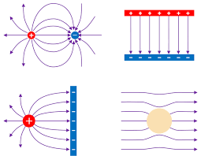

Electric field lines are a visual representation of electric fields that help us understand the direction and relative strength of electric fields in space. They provide an intuitive way to visualize complex electric field patterns.
What are Electric Field Lines?
$$\text{Electric field lines show the direction of the electric field at every point}$$
Electric field lines are imaginary lines drawn in space that show the direction of the electric field at every point. The tangent to a field line at any point gives the direction of the electric field at that point.

Field lines show the direction and relative strength of electric fields.
How to Find the Direction of Force from Field Lines
The electric force on a charge points in the same direction as the electric field at that point if the charge is positive, and in the opposite direction if it’s negative. Since field lines can curve, you find the force direction by drawing a line tangent to the field line at the location of the charge.
Rules for Drawing Electric Field Lines
Fundamental Rules
Direction: Field lines point in the direction of the electric field
Start and End: Lines start on positive charges and end on negative charges
Never Cross: Field lines never cross each other
Density: Closer lines indicate stronger electric fields
Perpendicular: Lines are perpendicular to equipotential surfaces
Step-by-Step: Drawing Field Lines for a Positive and Negative Charge (Dipole)
Mark the charges: Place a positive charge (+) and a negative charge (–) on your diagram, spaced apart.
Start at the positive charge: Draw several lines radiating outward from the positive charge. These are the starting points for your field lines.
Curve the lines: As you draw, let the lines bend smoothly toward the negative charge. At first, your lines might look like they will intersect, but adjust them so they curve and never cross. Field lines naturally curve to avoid intersections and always connect from + to –.
End at the negative charge: The lines should end at the negative charge, with the pattern denser near the charges and spreading out as they move away.
Show symmetry: Make sure the pattern is symmetric about the axis connecting the two charges. The lines should curve smoothly from + to –.
Fill in the pattern: Add a few lines that start at the positive charge and go off to infinity, and a few that end at the negative charge from infinity, to show the field extends beyond just the two charges.
Check your work: No lines should cross, and the direction should always be from + to –.
Tip: If your lines look like they're about to cross, curve them more! Field lines always curve to avoid intersections and to connect from positive to negative.
Additional Properties
Number of lines: Proportional to the magnitude of the charge
Symmetry: Field lines respect the symmetry of the charge distribution
Infinite lines: In theory, there are infinite field lines around any charge
$$\text{Field strength} \propto \frac{\text{Number of lines}}{\text{Area}}$$
The density of field lines (number of lines per unit area) is proportional to the strength of the electric field. This means:
Closer lines: Stronger electric field
Farther apart lines: Weaker electric field
Uniform spacing: Uniform field strength
Varying spacing: Varying field strength
Simply, what this means is that the closer the electric field lines are, the stronger the electric field will be there. Due to a stronger E field, there will be a greater electric force if a charge is placed there.
Worked Examples
Example 1: Drawing Field Lines for Two Equal Positive Charges
Problem: Sketch the electric field lines for two equal positive charges placed 2.0 m apart.
Solution Steps:
Start points: Draw lines starting from each positive charge
Repulsion: Lines from each charge curve away from the other charge
Midpoint: At the midpoint, field lines point away from both charges
Symmetry: Maintain symmetry about the line connecting the charges
Density: Lines are denser near the charges, sparser in the middle
Key Features: The field lines show repulsion between the charges, with a region of weak field at the midpoint.
Example 2: Field Lines for a Dipole
Problem: Draw the electric field lines for a dipole (equal positive and negative charges).
Solution Steps:
Start and end: Lines start at positive charge, end at negative charge
Curved paths: Lines curve from positive to negative charge
Perpendicular: Lines are perpendicular to the dipole axis at the midpoint
Density: Lines are densest near the charges
Far field: Lines become more parallel at large distances
Key Features: The dipole creates a characteristic field pattern with lines connecting the charges and a weak field region perpendicular to the dipole axis.
Example 3: Field Lines Near a Conductor (covered in next unit)
Problem: Sketch the electric field lines near a charged conducting sphere.
Solution Steps:
Radial pattern: Lines are radial (point outward from center)
Perpendicular to surface: Lines are perpendicular to the conductor surface
No lines inside: No field lines inside the conductor (E = 0)
Uniform density: Lines are uniformly spaced around the sphere
Decreasing density: Line density decreases with distance
Key Features: The field is strongest at the surface and decreases with distance according to the inverse square law.
Common Mistakes to Avoid
⚠️ Important Warnings
Don't draw lines crossing: Field lines never intersect
Don't forget direction: Lines must show the correct direction
Don't ignore symmetry: Field patterns should respect charge symmetry
Don't confuse density: More lines = stronger field
Don't forget units: Field lines are qualitative, not quantitative
Applications of Field Lines
Visualizing complex fields: Help understand field patterns around multiple charges
Predicting motion: Show the path a positive test charge would follow
Understanding conductors: Explain why electric fields are zero inside conductors
Designing devices: Used in designing capacitors, antennas, and other electrical devices
Teaching concepts: Provide intuitive understanding of electric fields
Field Lines vs. Mathematical Calculations
Comparison
Aspect
Field Lines
Mathematical
Purpose
Qualitative visualization
Quantitative calculation
Precision
Approximate
Exact
Complexity
Simple patterns
Complex calculations
Use
Conceptual understanding
Problem solving
Key Takeaways
Field lines are visual tools that help understand electric field patterns
They follow specific rules that reflect the physics of electric fields
Line density indicates field strength - closer lines mean stronger fields
They never cross because the electric field has a unique direction at each point
They start on positive charges and end on negative charges